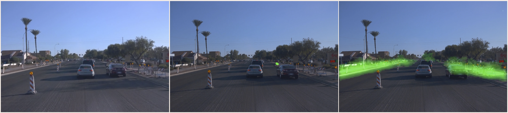

Day - Construction
Day - Downhill
Night - Road
Night - Intersection
Play/Pause
Video Sequence
Footprints Propagation
Predicted Walkable Regions
Your browser does not support HTML5 video.
Your browser does not support HTML5 video.
Your browser does not support HTML5 video.
Highlight:
Our model makes reliable predictions on clutter roads under construction.
